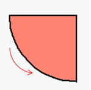
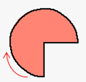

|
类型 |
绘图指令 |
|
描述 |
在指定区域画一个扇形。 此指令支持设置线条宽度、线条类型和填充绘图，但不允许画出自定义控件之外。 此指令只能在自定义元件的绘图函数内使用。请查看自定义元件调用函数参考例程。 |
|
语法 |
DRAWEX_SECTOR(centx, centy, radiusx, radiusy, startangle, endangle [, iffill]) centx, centy：圆心的位置 radiusx,radiusy：半径大小 startangle：起始角度，弧度单位 endangle：结束角度 iffill：是否填充，缺省为0（不填充） 0 - 不填充，非0 - 填充 （注意：后绘制的内容可能会遮挡前绘制的内容，因此选择填充时建议先画填充，后画边框）
绘制的角度说明：
从起始角度向结束角度绘制扇形： 若起始角度<结束角度：顺时针绘制扇形 若起始角度>结束角度：逆时针绘制扇形 |
|
适用控制器 |
支持RTHmi（仅支持4系列及以上控制器） |
|
例子 |
例一： SETEX_LINE(2,0) ‘设置线条宽度 SET_COLOR(RGB(0,0,0),RGB(250,128,114)) ‘设置边框颜色和填充颜色 DRAWEX_SECTOR(200,150,100,100,PI,90*PI/180,1) ‘绘制扇形边框 DRAWEX_SECTOR(200,150,100,100,PI,90*PI/180,0) ‘逆时针绘制可填充扇形  例二：画优质扇形，起始角度+PI*2即可 SETEX_LINE(2,0) ‘设置线条宽度 SET_COLOR(RGB(0,0,0),RGB(250,128,114)) ‘设置边框颜色和填充颜色 DRAWEX_SECTOR(200,150,50,50,PI/2+2*PI,4*PI,1) ‘绘制扇形边框 DRAWEX_SECTOR(200,150,50,50,PI/2+2*PI,4*PI,0) ‘顺时针绘制可填充扇形  |
|
相关指令 |